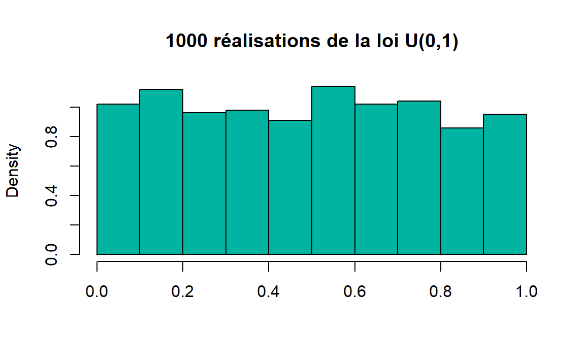
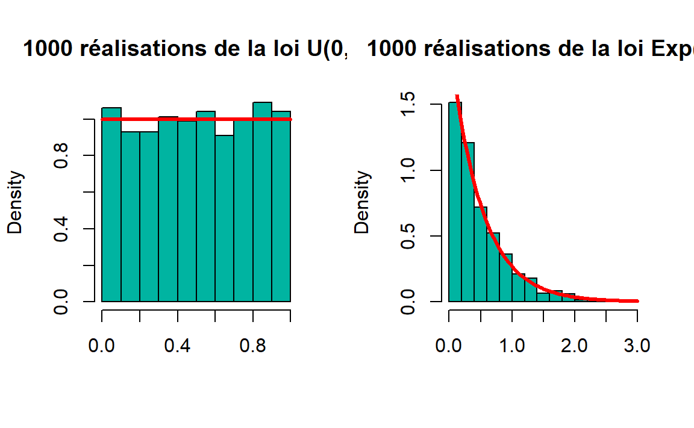
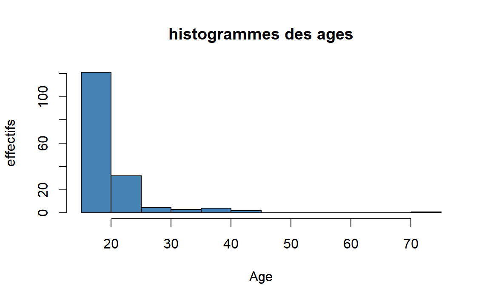

TP Statistique descriptive avec R (Avec corrections)
Qu’est-ce que c’est que ?
C’est un langage de programmation et un logiciel gratuit et libre. Il est surtout utilisé pour le développement de programmes statistiques et des analyses de données. Il gagne en popularité depuis quelques années avec l’émergence de la data science et du fait qu’il est gratuit et ouvert (open-source). est née d’un projet de recherche mené par deux chercheurs, Ross Ihaka et Robert Gentleman à l’université d’Auckland (Nouvelle-Zélande) en 1993. En 1997 est mis en place le Comprehension R Archive Network (CRAN) qui centralise les contributions au projet.
Depuis le projet connaît une croissance soutenue, grâce à des contributions de la part de milliers de personnes à travers le monde.
RStudio
C’est une IDE (Integrated Development Environment) ou Environnement Intégré de Développement.
Il sert d’interface entre et l’utilisateur, offre à celui diverses commodités d’utilisation
1ère partie: Données quantitatives discrètes
Le nombre d’arbres plantés sur les parcelles d’un lotissement a été compté. Les données obtenues sont les suivantes:
\[1,2,4,1,6,3,2,1,2,0,1,2,2,1,3,0,3,2,1,2,2,3,2,3.\]
1. Quelle est la nature de variable étudiée?
2. Rentrer ces données sous la forme d’un vecteur nommé arbres et affichez ce vecteur.
arbres = c(1,2,4,1,6,3,2,1,2,0,1,2,2,1,3,0,3,2,1,2,2,3,2,3)
arbres
#ans> [1] 1 2 4 1 6 3 2 1 2 0 1 2 2 1 3 0 3 2 1 2 2 3 2 33. Trier les valeurs de ce vecteur par ordre croissant.
sort(arbres) # en ordre croissant
#ans> [1] 0 0 1 1 1 1 1 1 2 2 2 2 2 2 2 2 2 3 3 3 3 3 4 6
sort(arbres,decreasing = T) # en ordre décroissant
#ans> [1] 6 4 3 3 3 3 3 2 2 2 2 2 2 2 2 2 1 1 1 1 1 1 0 04. Donner la taille de l’échantillon (c’est-à-dire le nombre de composantes de ce vecteur) en la notant n et affichez sa valeur.
Effectifs et fréquence
5. Montrer la séquence des modalités et la séquence des effectifs correspondants.
sort(unique(arbres)) # les modalités
#ans> [1] 0 1 2 3 4 6
effectifs = table(arbres) # pour calculer les effectifs
effectifs
#ans> arbres
#ans> 0 1 2 3 4 6
#ans> 2 6 9 5 1 16. Montrer le tableau de fréquences et de pourcentages.
frequences = effectifs/n
frequences
#ans> arbres
#ans> 0 1 2 3 4 6
#ans> 0.0833 0.2500 0.3750 0.2083 0.0417 0.0417
pourcentages = frequences * 100 # ou (effectifs*100)/n
pourcentages
#ans> arbres
#ans> 0 1 2 3 4 6
#ans> 8.33 25.00 37.50 20.83 4.17 4.177. Calculer et afficher les effectifs cumulés et les fréquences cumulées.
Mesures de tendance centrale
8. Calculer le nombre moyen d’arbres par parcelle.
9. Calculer le nombre maximum et le nombre minimum d’arbres sur une parcelle.
10. Calculer le nombre médian d’arbres par parcelle.
11. Utiliser la fonction summary() pour obtenir un tableau récapitulatif des indicateurs.
Indicateurs de dispersion
12. Calculer la variance du nombre d’arbres plantés sur les parcelles.
13. Calculer maintenant l’écart-type et vérifier que l’écart-type est la racine carrée de la variance.
14. Calculer la variance vous-même. La variance obtenue est elle la même que la précédente?
# la fonction var() calcule la variance corrigée
variance = sum((arbres-mean(arbres))^2)/length(arbres)
variance
#ans> [1] 1.62Le logiciel utilise \(n-1\) pour le dénomiateur dans la définition de la variance, c’est-à-dire \(\frac{1}{n-1} \sum_{i=1}^n (x_i - \bar{x})^2\) (d’écart-type noté \(\sigma_{n-1}\) ou \(s\). Cette quantité est souvent préférée dans les applications numériques pour des questions d’estimation).
Représentations graphiques
15. La fontion plot() affiche par défaut un nuage de points avec en abscisse le numéro de l’observation (ici de 1 à 24) et en ordonnée le nombre d’arbres. Tester cette fonction. Modifier le titre de la figure, les noms des axes, la couleur et la forme des points affichés.

16. Afficher la courbe des fréquence cumulées. (Indication: Utiliser la fonction ecdf()).

17. Tracer un diagramme en bâtons par la fonction barplot() à partir du tableau des effectifs ou des fréquences.


2ème partie : Analyse descriptive
Données utilisées
Une enquête a été réalisée sur 237 étudiants. Les données sont les suivantes:
- Sex: The sex of the student. (Factor with levels “Male” and “Female”.)
- Wr.Hnd: span (distance from tip of thumb to tip of little finger of spread hand) of writing hand, in centimetres.
- NW.Hnd: span of non-writing hand.
- W.Hnd: writing hand of student. (Factor, with levels “Left” and “Right”.)
- Fold: “Fold your arms! Which is on top” (Factor, with levels “R on L”, “L on R”, “Neither”.)
- Pulse: pulse rate of student (beats per minute).
- Clap: ‘Clap your hands! Which hand is on top?’ (Factor, with levels “Right”, “Left”, “Neither”.)
- Exer: how often the student exercises. (Factor, with levels “Freq” (frequently), “Some”, “None”.)
- Smoke: how much the student smokes. (Factor, levels “Heavy”, “Regul” (regularly), “Occas” (occasionally), “Never”.)
- Height: height of the student in centimetres.
- M.I: whether the student expressed height in imperial (feet/inches) or metric (centimetres/metres) units. (Factor, levels “Metric”, “Imperial”.)
- Age: age of the student in years.
Définition du répertoire de travail
Vous avez la possibilité de définir un Répertoire de travail dans lequel vous allez stocker votre script R, vos données etc… Ceci est réalisé par la fonction setwd("..Chemin/de/votre/repertoire"). Cette fonction considère comme seul paramètre le chemin d’accès au répertoire que vous avez choisi. A tout moment, vous pouvez vérifier le répertoire de travail courant en executant l’instruction suivante:
1. Définisser votre répertoire de travail.
Chargement des données
Il existe une multitude de fonctions qui permettent de charger un fichier de données. Télécharger le fichier de données en cliquant ici et enregistrer le dans votre répertoire. Ensuite utiliser la fonction read.csv() pour charger les données dans . Cette fonction prend comme principaux paramètres d’entrée le fichier à charger (file="data.txt"), le séparateur de colonnes dans le fichier initial (sep=) et la présence (ou non) des noms de colonnes dans le fichier (header=).
Ouvrez toujours le fichier de données dans un éditeur de texte pour connaitre le séparateur de colonnes et voir si les noms de colonnes sont présents.
2. Charger le fichier des données dans l’enquête dans un tableau nommé data. L’instruction de chargement du fichier est la suivante:
Le fichier de données est chargé dans l’environnement et est affecté à l’objet donnees. C’est cet objet, de type dataframe qui va faire l’objet de manipulations par la suite.
3. Afficher le nombre de d’observations (lignes) et le nombre de variables (colonnes).
dim(donnees) # pour afficher les deux
#ans> [1] 168 12
nrow(donnees) # nb de lignes
#ans> [1] 168
ncol(donnees) # nb de colonnes
#ans> [1] 124. Utiliser la fonction head() pour afficher les premières lignes (6 par défaut) de données chargées.
head(donnees)
#ans> Sex Wr.Hnd NW.Hnd W.Hnd Fold Pulse Clap Exer Smoke Height
#ans> 1 Female 18.5 18.0 Right R on L 92 Left Some Never 173
#ans> 2 Male 19.5 20.5 Left R on L 104 Left None Regul 178
#ans> 3 Male 20.0 20.0 Right Neither 35 Right Some Never 165
#ans> 4 Female 18.0 17.7 Right L on R 64 Right Some Never 173
#ans> 5 Male 17.7 17.7 Right L on R 83 Right Freq Never 183
#ans> 6 Female 17.0 17.3 Right R on L 74 Right Freq Never 157
#ans> M.I Age
#ans> 1 Metric 18.2
#ans> 2 Imperial 17.6
#ans> 3 Metric 23.7
#ans> 4 Imperial 21.0
#ans> 5 Imperial 18.8
#ans> 6 Metric 35.85. L’accès à une colonne d’un dataframe se fait par la notation $: nom_du_dataframe$nom_variable. Afficher les valeurs de la variable Age de vos données.
donnees$Age
#ans> [1] 18.2 17.6 23.7 21.0 18.8 35.8 19.0 22.3 28.5 17.5 19.3 18.3 17.9 17.9
#ans> [15] 18.2 17.8 18.2 17.5 18.1 19.2 17.5 39.8 17.2 18.0 17.9 35.5 17.1 17.5
#ans> [29] 18.9 19.4 18.4 30.8 18.5 17.5 18.3 17.4 20.0 17.2 17.7 20.3 17.3 17.5
#ans> [43] 18.6 17.6 17.7 17.4 17.8 20.7 23.6 17.1 20.2 17.2 17.2 18.0 18.8 21.6
#ans> [57] 19.7 19.7 22.8 19.4 23.2 19.1 17.8 20.2 17.7 18.2 18.6 17.8 24.2 18.2
#ans> [71] 21.2 17.9 17.4 20.5 22.9 18.9 18.9 20.1 18.2 17.5 17.4 21.0 17.7 18.1
#ans> [85] 18.0 18.3 20.0 18.8 18.5 18.4 19.2 19.3 18.7 17.5 17.2 19.0 19.2 19.0
#ans> [99] 23.0 32.7 20.0 20.2 25.5 18.2 23.5 70.4 43.8 23.6 44.2 17.9 18.4 17.5
#ans> [113] 29.1 18.5 18.2 32.8 17.3 18.7 18.7 17.8 17.2 36.6 23.1 17.2 23.4 17.1
#ans> [127] 17.2 23.8 18.8 21.2 24.7 18.5 20.3 20.1 18.9 27.3 18.9 17.2 26.5 17.0
#ans> [141] 17.2 19.2 17.5 19.2 21.3 20.2 18.7 17.1 17.4 18.6 19.5 17.2 17.2 20.4
#ans> [155] 17.1 19.3 18.9 17.3 18.2 18.4 17.4 20.3 19.3 18.2 17.7 16.9 17.2 17.8Analyse descriptive univariée
Indicateurs statistiques pour variables quantitatives
6. Calculer et afficher la moyenne et l’écart-type d’age des élèves qui ont participé à l’enquête.
moyenne_age = mean(donnees$Age)
moyenne_age
#ans> [1] 20.4
ecarttype_age= sd(donnees$Age)
ecarttype_age
#ans> [1] 6.17. Appliquer la fonction summary() sur la variable Age. Qu’est ce que cette fonction calcule et affiche?
summary(donnees$Age)
#ans> Min. 1st Qu. Median Mean 3rd Qu. Max.
#ans> 16.9 17.7 18.6 20.4 20.2 70.4Représentations graphiques pour variables quantitatives
8. Tracer l’histogramme de la variable Age. Ecrire un titre correspondante à votre figure, modifier les noms des axes et les couleurs des bâtons.

9. Afficher une la boîte à moustache correspondante à la variable Age. Commenter ce qu’on observe sur cette figure.


Indicateurs statistiques et représentations graphiques pour variables qualitatives
10. Choisir une variable qualitative parmi les variables de cette enquête. Justifier votre choix. Calculer et afficher les effectifs et les fréquences de cette variable.
Pour voir les variables dans votre dataframe, vous pouvez utiliser la fonction names() pour afficher les noms des variables, ou str() (structure) pour voir toutes les colonnes, leur types, les quelques premières valeurs, etc.. Ou simplement dans Rstudio on peut voir la structure du dataframe dans la fenêtre “Environment”.
str(donnees) # str pour structure
#ans> 'data.frame': 168 obs. of 12 variables:
#ans> $ Sex : Factor w/ 2 levels "Female","Male": 1 2 2 1 2 1 2 2 1 1 ...
#ans> $ Wr.Hnd: num 18.5 19.5 20 18 17.7 17 20 18.5 17 19.5 ...
#ans> $ NW.Hnd: num 18 20.5 20 17.7 17.7 17.3 19.5 18.5 17.2 20.2 ...
#ans> $ W.Hnd : Factor w/ 2 levels "Left","Right": 2 1 2 2 2 2 2 2 2 2 ...
#ans> $ Fold : Factor w/ 3 levels "L on R","Neither",..: 3 3 2 1 1 3 3 3 1 1 ...
#ans> $ Pulse : int 92 104 35 64 83 74 72 90 80 66 ...
#ans> $ Clap : Factor w/ 3 levels "Left","Neither",..: 1 1 3 3 3 3 3 3 3 2 ...
#ans> $ Exer : Factor w/ 3 levels "Freq","None",..: 3 2 3 3 1 1 3 3 1 3 ...
#ans> $ Smoke : Factor w/ 4 levels "Heavy","Never",..: 2 4 2 2 2 2 2 2 2 2 ...
#ans> $ Height: num 173 178 165 173 183 ...
#ans> $ M.I : Factor w/ 2 levels "Imperial","Metric": 2 1 2 1 1 2 2 2 1 2 ...
#ans> $ Age : num 18.2 17.6 23.7 21 18.8 ...
# prenant Smoke ou Sex
table(donnees$Smoke)
#ans>
#ans> Heavy Never Occas Regul
#ans> 7 134 13 1411. Afficher un diagramme circulaire (en utilisant la fonction pie()) pour la variable qualitative choisie.
 ### Analyse descriptive bivariée {-}
Indicateurs pour le croisement de deux variables qualitatives
Le tableau de contingence est un moyen particulier de représenter simultanément deux caractères observés sur une même population, s’ils sont discrets ou bien continus et regroupés en classes.
12. Un tableau de contingence des effectifs joints croisant deux variables qualitatives est réalisé par la fonction table(). Effectuer et afficher le croisement de deux variables (Sex) et (Smoke).
table(donnees$Sex,donnees$Smoke)
#ans>
#ans> Heavy Never Occas Regul
#ans> Female 4 70 7 3
#ans> Male 3 64 6 1113. Utiliser la fonction addmargins() pour ajouter au tableau les effectifs marginaux.
addmargins(table(donnees$Sex,donnees$Smoke))
#ans>
#ans> Heavy Never Occas Regul Sum
#ans> Female 4 70 7 3 84
#ans> Male 3 64 6 11 84
#ans> Sum 7 134 13 14 168Représentations graphiques pour le croisement de deux variables qualitatives
On peut représenter le croisement de deux variables qualitatives avec un diagramme en bâtons. Dans le cas de deux variables qualitatives, la fonction barplot() prend comme premier paramètre le tableau de contingence.
colors<-c("darkred","darkblue")
barplot(table(donnees$Sex,donnees$Smoke),col=colors, main="Distribution du tabagisme en fonction du sexe",
xlab="",ylab="Effectifs")
legend("topright", xpd = TRUE, legend = c("Femme","Homme"),fill=colors)
On remarque qu’il y a plus d’hommes que des femmes qui fument régulièrement. (selon l’enquête réalisée)
Il est plus convenable dans ce cas de représenter le croisement de ces deux variables qualitatives à l’aide d’un mosaicplot.

Indicateurs pour le croisement d’une variable qualitative et d’une variable quantitative
Disons qu’on souhaite calculer la moyenne de fréquence cardiaque chez les hommes ayant répondu au questionnaire de l’enquête. On a besoin de filtrer le dataframe de la façon suivante:
# On utilise la fontion subset pour créer un sous ensemble de nos données
# Remarquer qu'on utilise == pour comparer
pulse_hommes = subset(donnees, donnees$Sex=="Male")15. Vérifier que le sous ensemble créé pulse_homme ne contient que des hommes.
table(pulse_hommes$Sex) # ou summary(pulse_hommes$Sex)
#ans> Error in table(pulse_hommes$Sex): object 'pulse_hommes' not found16. Ensuite calculer les indicateurs statistiques de la fréquence cardiaque chez les hommes (vous pouvez utiliser la fonction summary()).
summary(pulse_hommes$Pulse)
#ans> Error in summary(pulse_hommes$Pulse): object 'pulse_hommes' not found17. Faire la même chose mais pour les femmes.
pulse_femmes = subset(donnees, donnees$Sex=="Female")
summary(pulse_femmes$Pulse)
#ans> Min. 1st Qu. Median Mean 3rd Qu. Max.
#ans> 40.0 68.0 74.0 74.8 80.0 104.0Représentation graphique pour le croisement d’une variable qualitative et d’une variable quantitative
On peut réaliser une boîte à moustache des valeurs de la variable quantitative en fonction des modalités de la variables qualitative, pour cela on peut utliser la fonction boxplot(). Plus précisémeent, on utilise le paramètre formula qui permet de spécifier que nous voulons une boîte à moustache de la variable
quantitative en fonction (caractère ~ ) de la variable quantitative.
18. Afficher sur la même figure la fréquence cardiaque en fontion du sexe. Interpréter la figure.
La figure souhaitée est la suivante:
boxplot(formula=donnees$Pulse~donnees$Sex,col="darkred",
main="Fréquence cardiaque en fonction du sexe",
xlab="Sexe",ylab="Fréquence cardiaque")
19. Afficher sur la même figure la taille (variable Height) en fontion du sexe. Interpréter la figure.
boxplot(formula=donnees$Height~donnees$Sex,col="darkred",
main="Taille en fonction du sexe",
xlab="Sexe",ylab="Taille")
Représentation graphique pour le croisement de deux variables quantitatives
Un nuage de points entre les deux variables quantitatives est réalisé par la fonction plot(). Le premier
paramètre correspond à la variable en abscisse et le deuxième à la variable en ordonnées.
20. Afficher la fréquence cardiaque en fonction de l’age. Modifier les paramètres de la figure (titre, noms des axes, couleurs des points, tailles, formes, etc..)
plot(donnees$Age, donnees$Pulse,
pch=21,
bg="darkred",
main="Fréquence cardiaque en fonction de l'age",
xlab="Age",ylab="Fréquence cardiaque")
◼